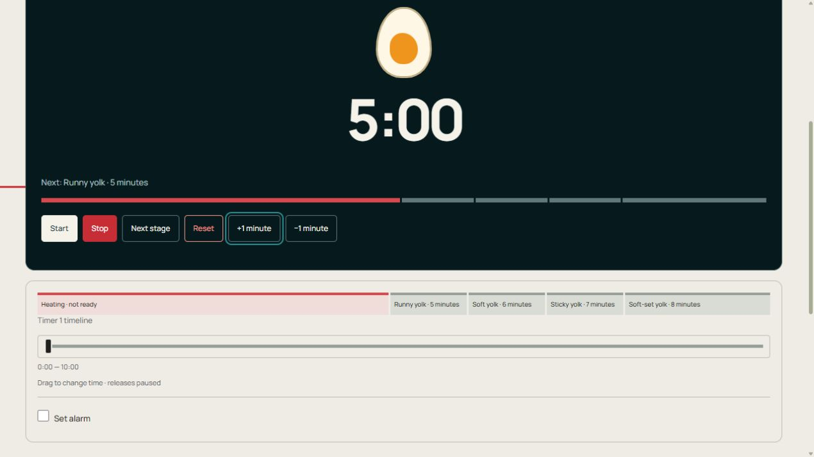

Temporizador para ovos
Siga os marcos de cozimento do ovo, do líquido ao cozido, com um guia de gema visível.
Mantenha esta página aberta. A restauração dos relógios foi pausada após uma recarga. As dicas de palco exigem som ativado.
Como funciona e dicas
Como funciona Temporizador para ovos
Siga os marcos de cozimento do ovo, do líquido ao cozido, com um guia de gema visível.
Coloque ovos grandes em temperatura ambiente em água fervente e comece imediatamente. Retire um ovo no marco de sua preferência: 5, 6, 7, 8 ou 10 minutos.
Configure e execute o cronômetro
- Abra Personalizar → Editar para revisar a base, os relógios e os slots. Nomeie os cartões para seu pessoal, pratos, amostras ou empregos.
- Toque em um número de duração para o mostrador circular. Gire no sentido horário para adicionar tempo ou no sentido anti-horário para subtrair e, em seguida, Aplicar. Você também pode digitar um número. Fechar descarta o rascunho do dial.
- Editar este relógio e registro de volta altera um cartão pausado. O temporizador de edição altera a configuração compartilhada e reconstrói o quadro quando você aplica as alterações; exporte as leituras primeiro.
- Iniciar individualmente ou Iniciar todos juntos. A próxima etapa termina uma vaga mais cedo. No modo manual o relógio espera em zero; escolha Próxima etapa e, em seguida, Iniciar.
- Arraste a linha do tempo abaixo de um relógio para corrigir o tempo decorrido. Release deixa o relógio pausado. Verifique a posição e depois retome.
Visão geral dos controles

- Iniciar/Pausar — Execute ou segure apenas este cartão.
- Parar — Pausa sem limpar o tempo decorrido.
- Próxima etapa — Termine o slot atual mais cedo e passe para o próximo.
- Reiniciar – Limpe a execução deste cartão e retorne ao seu primeiro slot.
- Iniciar/Pausar/Retomar
- Executa ou pausa apenas este cartão. O tempo de pausa é excluído.
- Parar
- Pausa este relógio sem limpar o tempo decorrido.
- Próxima etapa
- Termina este slot mais cedo. O próximo slot é executado se o cartão estiver em execução ou permanece em pausa se estiver em pausa.
- Reiniciar
- Restaura o primeiro slot deste cartão e limpa o tempo decorrido e as voltas. Outras cartas permanecem inalteradas.
- +1 minuto / −1 minuto
- Altera a duração deste slot em 60 segundos; o modelo armazenado permanece inalterado.
- Iniciar tudo/Pausar tudo
- Inicia as cartas elegíveis juntas ou segura a mesa. No modo turno, apenas o primeiro jogador começa. Eles estão em Personalizar em páginas de relógio único.
- Adicionar relógio/Remover relógio
- Adiciona uma cópia da primeira configuração, até 12 cartões. Remover o relógio está dentro Edite este relógio e registro de volta; pare o cartão primeiro.
- Exportar CSV
- Baixa o estágio atual e os segundos decorridos para cada cartão, além dos totais de voltas e frações registradas. Este instantâneo não é um histórico completo do estágio ou uma configuração reutilizável.
- Som ativado/som desativado
- Alterna sons e lembretes do palco. O tique de transferência e o alarme extra possuem interruptores separados.
- Tela cheia / Placa de tela cheia
- Amplia um relógio escuro ou a placa completa. Saia com Sair em tela cheia ou Escape quando houver suporte.
- Linha do tempo
- A faixa dentro do relógio exibe o progresso. Arraste o controle deslizante separado abaixo dele para corrigir o tempo decorrido; release pausa este cartão.
- Definir alarme / Alarme em / Testar alarme
- Habilite uma campainha extra, arraste Alarm at para uma posição de tempo decorrido e teste-o. Este sino tem seu próprio interruptor, separado dos sons do palco e do tique de transição do palco. Mantenha a aba aberta.
- Clique na mudança de etapa
- Ativa ou desativa o clique de handoff curto separadamente dos alarmes de estágio.
Configurações e configurações salvas
- Personalizar/Editar/Editar temporizador
- Personalizar abre as ferramentas. Editar abre o editor completo. Pause todos os relógios antes de aplicar uma nova configuração; Aplicar alterações reconstrói o quadro, portanto, exporte as leituras primeiro. Cancelar fecha o editor.
- Modelos / Configuração original / Prática curta / Criar modelo
- Os modelos pertencem a este temporizador. A configuração original restaura seu plano inicial. A prática curta fornece slots editáveis mais curtos. Criar modelo abre o editor; insira um nome e salve o atual como modelo para manter seu plano.
- Salvar como temporizador personalizado/Duplicar/Salvar/Cancelar
- Salvar como cronômetro personalizado dá um nome ao seu plano em Meus cronômetros sob o controle da conta. Duplicar salva uma cópia separada. Salvar confirma o nome; Cancelar fecha o formulário de nomenclatura.
- Nome do temporizador/Fundação/Relógios/jogadores/Ilustração
- Escolha contagens regressivas sequenciais, relógios de contagem progressiva independentes ou bancos de tempo de jogadores, com 1 a 12 cartas. A ilustração escolhe a arte para um cronômetro personalizado.
- Adicionar slot / Mover para cima / Mover para baixo / Remover
- Crie e reordene a lista de slots. Mantenha pelo menos um slot. Segundos é a sua duração; Instrução/quantidade de água/ponto de verificação exibe uma nota no relógio.
- Avançado: preparação, descanso, repetições e som
- Prepare e descanse insira slots extras em segundos. A sequência de repetição repete o plano. A tela escolhe para baixo ou para cima dentro de um slot. Mover para o próximo slot controla automaticamente a transferência em zero.
- Sinais do intervalo
- No início e no final escolha um som por slot. O aviso são segundos restantes; Lembrete a cada segundo decorrido entre dicas repetidas. Zero desativa um aviso ou lembrete. A cor da fase marca trabalho ou descanso.
- Som ativado / Volume / Som ao registrar uma volta / Tique-taque silencioso durante os últimos 10 segundos / Ocultar dígitos do relógio
- Controla o som do palco, seu volume, cliques de volta opcionais, tique final e exibição numérica. O tique de transição de estágio e definir alarme possuem interruptores separados.
- Estrela delineada / Iniciar temporizador
- A estrela adiciona esta página à linha de favoritos na página principal e outros temporizadores. Pressione-o novamente para removê-lo. Make start timer escolhe o cronômetro que abre na página inicial.
- Faça login com o Google / Sair / Meus temporizadores / Carregar configurações sincronizadas
- O controle da conta entra ou sai. Meus cronômetros lista cronômetros personalizados salvos. Carregar configurações sincronizadas carrega alterações de conta recebidas; pause um cronômetro em execução primeiro.
Exemplo: escolha um marco de cozimento
Comece quando ovos grandes em temperatura ambiente entrarem em água fervente. Os marcos cumulativos são 5 minutos escorrendo, 6 moles, 7 pegajosos, 8 moles e 10 cozidos. Para uma meta de 7 minutos, habilite Definir alarme e arraste Alarme para 7:00. Retire e esfrie o ovo na campânula; o cronômetro continua para marcos posteriores.
Outras maneiras de usá-lo
- Ovos retirados em momentos diferentes
- Repetir um tempo de cozimento preferido
Limites de salvamento, som e navegador
Os tempos são pontos de partida para ovos grandes em temperatura ambiente; tamanho, temperatura e altitude afetam os resultados. Resfrie os ovos imediatamente após a remoção.
Configurações, modelos nomeados, temporizadores personalizados e favoritos são salvos neste navegador. Faça login com o Google no canto superior direito para sincronizar as configurações salvas. Se Carregar configurações sincronizadas aparecer, faça uma pausa antes de carregar. A sincronização de configuração salva não sincroniza relógios ativos entre dispositivos.
Mantenha esta aba aberta e teste o som no dispositivo que você usará. Telefones e navegadores podem atrasar alarmes em guias em segundo plano ou enquanto estão bloqueados. Recarregar restaura relógios salvos pausados; fechar a página não mantém um alarme ativo em execução.
Exportar leituras antes de Reset, remover um cartão ou aplicar outro plano. CSV é um instantâneo; salvamentos locais automáticos não são um arquivo de resultados permanente.
Referência de tempo: Guia de fervura de ovo Good Food. As imagens das gemas são ilustrações, não medições do ovo na sua panela.